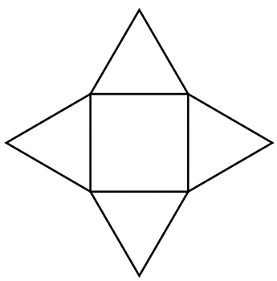

Assignment 7: Final Proposal

Assignment 7: Proposal
For this assignment, I found the concept of the joining methods really daunting, before realizing that it was something that we had been working towards throughout the quarter.
I was struggling to conceptualize how to create a cube that would be joined only by their joints, but I realized that the concepts could apply to any 3D shape, and I started thinking about how to design 3D shapes in 2D, and looking up various nets (going back to like 3rd grade, I think that's what they're called). Once again, I turned to triangles (as my favorite shape), and could create a pyramid that would fulfill the requirements of the assignment, using something like a tongue and groove joint.
